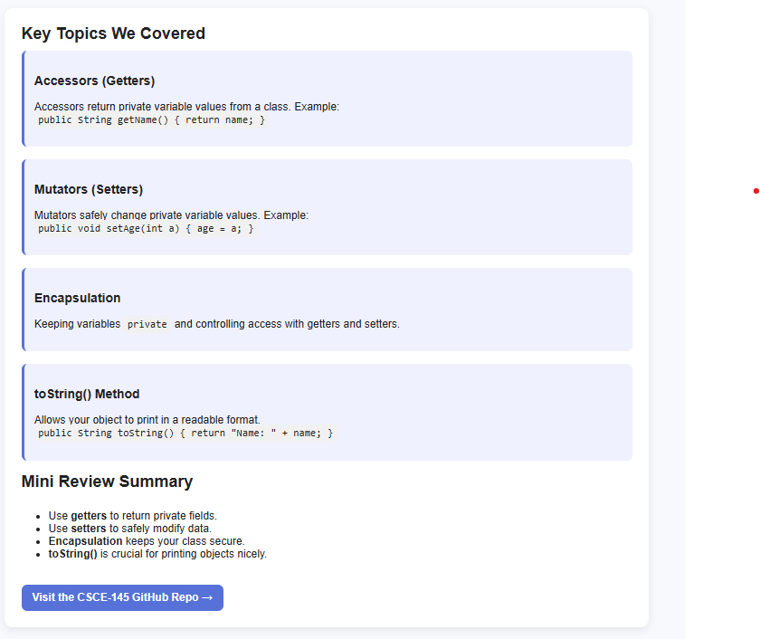

Highlighted Projects
CSCE 145 — Java Concepts Review
A summary page reviewing key Java topics including getters, setters, mutators, encapsulation, and toString.
Problem Statement

Students struggle to track retail meal swipes because the balance is only available through a separate app.
Affinity Diagram

Clusters ideas for integrating retail swipe tracking into Grubhub, including tech, funding, challenges, and marketing.